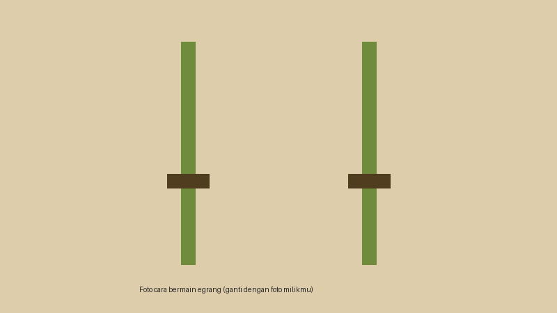

Mengenal Egrang
Bagian-Bagian Egrang
Satu set egrang terdiri dari dua batang bambu. Setiap batang memiliki bagian berikut.
- Tiang bambu sebagai penopang utama.
- Pijakan kaki yang dipasang pada ketinggian tertentu.
- Bagian atas tiang sebagai tempat pemain berpegangan.
Cara Bermain

- Pegang kedua tiang bambu dengan tegak di depan tubuh.
- Naikkan satu kaki ke pijakan, lalu dorong tubuh ke atas.
- Naikkan kaki kedua dan jaga tubuh tetap seimbang.
- Melangkah bergantian sambil mengangkat tiang satu per satu.
Tingkat Kesulitan Berdasarkan Tinggi Pijakan
| Tingkat | Tinggi Pijakan | Keterangan |
|---|---|---|
| Pemula | Rendah | Cocok untuk latihan keseimbangan awal. |
| Menengah | Sedang | Untuk pemain yang sudah lancar melangkah. |
| Mahir | Tinggi | Dipakai pemain berpengalaman, perlu ekstra hati-hati. |